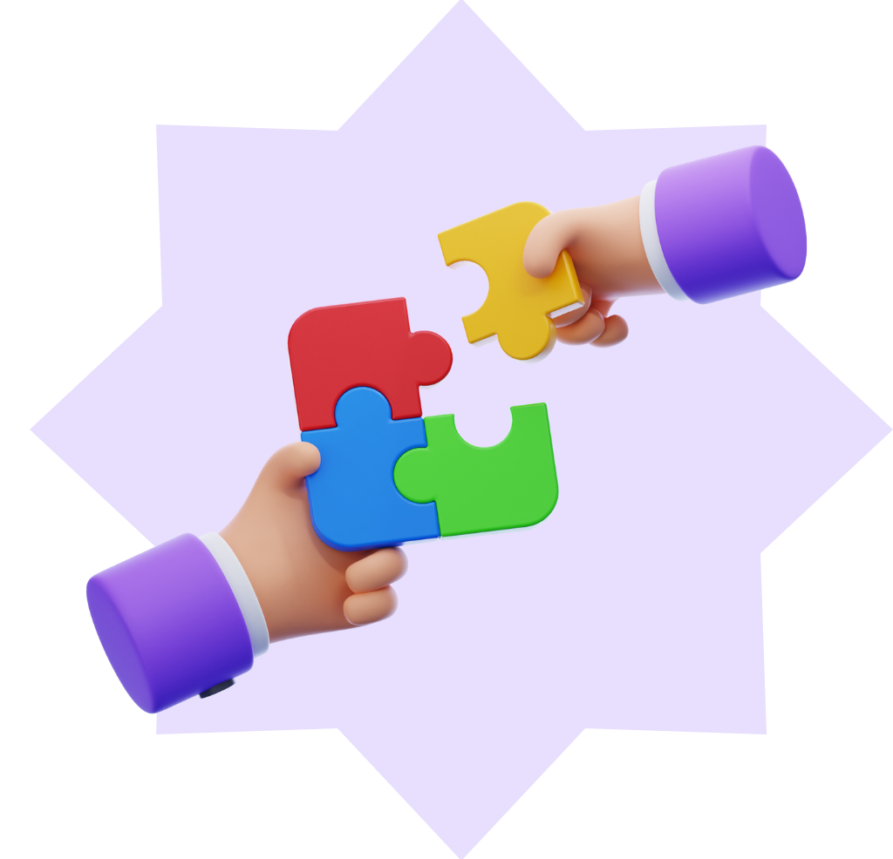

Colaborador Relutante
Com essa combinação, a pessoa demonstra um interesse em ouvir e colaborar com os outros, mas também mostra uma cautela e uma tendência a evitar riscos. Ela pode ter ideias criativas, mas ainda está desenvolvendo a confiança e a proatividade necessárias para colocá-las em prática. Esse perfil pode se beneficiar de um ambiente de incentivo e apoio para desenvolver mais segurança e persistência.